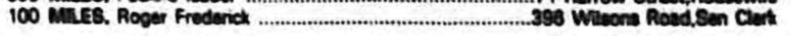
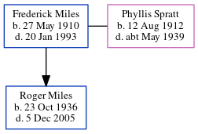

Roger Frederick Miles 1936 - 2005
[ Home ] | [ Calendar ] | [ Surnames Index ] | [ Errors ] | [ Family History ]The child of Frederick Miles and Phyllis Spratt, Roger Miles, the second cousin on the father's side of Nigel Horne, was born in Margate, Kent, England on 23 Oct 19361,2 and. He had 1 surviving child with Senara Sasae: . In 1981, he was living at 398 Wilsons Road, Waltham, Christchurch, Canterbury, New Zealand3.
He died on 5 Dec 2005 in Christchurch2.
Parents
- Frederick James was born on 27 May 1910
- Phyllis Rose was born on 12 Aug 1912
Citations
- England & Wales births 1837-2006 - Findmypast
- New Zealand Death Index - Findmypast
- New Zealand, Electoral Rolls, 1853-1981
Media
1981 Electoral Roll

England & Wales births 1837-2006 - BMD/B/1936/4/AZ/000743/067
New Zealand death index - ANZ/NZBMD/P2/D/2280248
Family Tree
Map
Generated by ged2site. Last updated on Jul 3, 2024